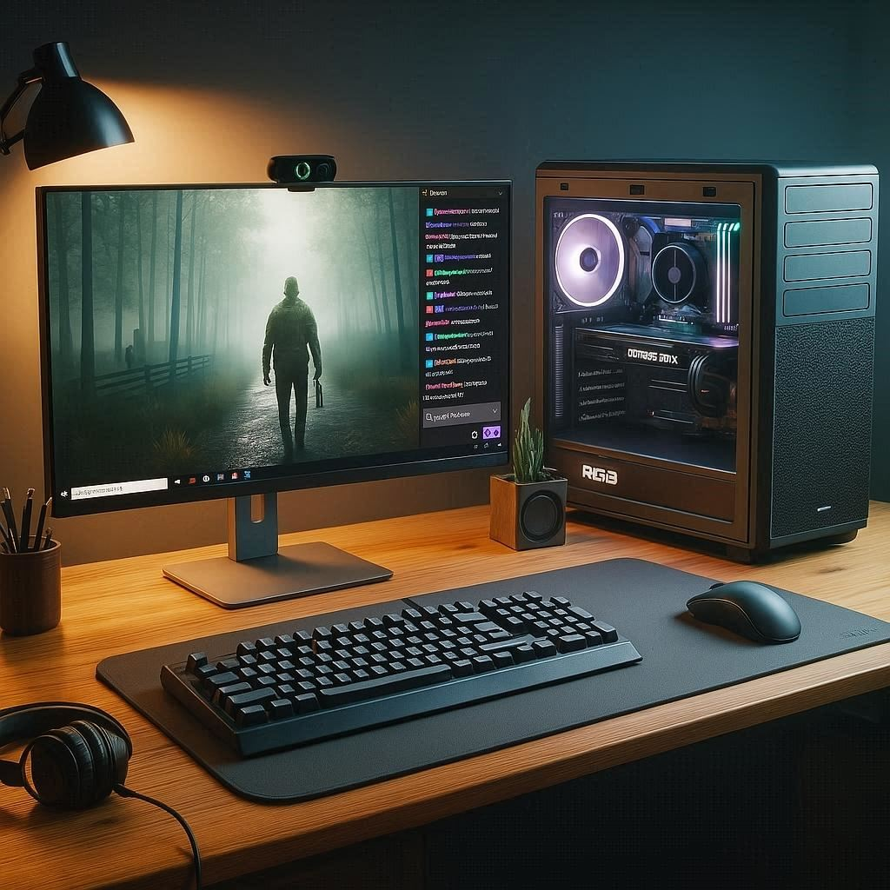

1. Capturas de Interacción con la IA
Interacción 1: Elección de GPU

Reflexión: Estoy completamente de acuerdo con la respuesta de la IA, ya que refuerza la decisión que tomé al armar mi presupuesto. Aunque la idea de obtener más FPS con una placa AMD era tentadora, la IA aclara que para el streaming, la estabilidad y la calidad de la transmisión son más importantes. La explicación sobre cómo el codificador NVENC libera al procesador justifica la elección de la RTX 3050.
Interacción 2: Importancia de la UPS

Reflexión: Desconocía la importancia de un sistema de alimentación ininterrumpida (UPS). La respuesta de la IA fue muy útil al enumerar los riesgos a evitar. Comprendí que la UPS es un componente fundamental para la protección del hardware contra picos de tensión y cortes abruptos. Considero que su incorporación al presupuesto está justificada y es esencial.
2. Tabla Comparativa Generada con IA + Validación
| Característica |
AMD Ryzen 5 5500 |
Intel Core i5-12400F |
| Arquitectura |
Zen 3 |
Alder Lake |
| Proceso (nm) |
7 nm |
10 nm (Intel 7) |
| Núcleos / Hilos |
6 Núcleos / 12 Hilos |
6 Núcleos / 12 Hilos |
| Frecuencia Base |
3.6 GHz |
2.5 GHz |
| Frecuencia Turbo Máx. |
4.2 GHz |
4.4 GHz |
| Caché L2 |
3 MB |
7.5 MB |
| Caché L3 |
16 MB |
18 MB |
| TDP (Consumo) |
65W |
65W (Base) / 117W (Turbo) |
| Socket |
AM4 |
LGA 1700 |
| Soporte de Memoria |
DDR4 (hasta 3200 MHz) |
DDR5 (hasta 4800 MHz) / DDR4 (hasta 3200 MHz) |
| Versión PCIe |
PCIe 3.0 |
PCIe 5.0 |
| Gráficos Integrados |
No tiene |
No tiene (versión F) |
Fuentes para Validación
Comentario Final
Al analizar la tabla comparativa, es evidente que el procesador Intel Core i5-12400F es técnicamente superior. Sin embargo, mantengo la elección del AMD Ryzen 5 5500, ya que se alinea mejor con el objetivo principal del proyecto: optimizar el presupuesto sin sacrificar el rendimiento de la transmisión. La elección de una plataforma AM4 más económica permite destinar una mayor parte del presupuesto a la tarjeta gráfica NVIDIA, que gestionará la carga del streaming con su tecnología NVENC.
3. Resumen Técnico Explicado con IA + "Traducción al Lenguaje Común"
¿Qué es el bitrate en streaming?
Respuesta de la IA: El bitrate (tasa de bits) es la cantidad de datos que se transmiten por segundo durante una emisión en vivo. Se mide en kilobits por segundo (kbps). Cuanto mayor sea el bitrate, mejor será la calidad de imagen y sonido, pero también se necesitará más ancho de banda. Encontrar un equilibrio entre calidad y estabilidad es clave.
Traducción: El bitrate condiciona la calidad de imagen del stream, ya que son los datos que se mandan por segundo. A más datos (más bitrate), mejor se ve y escucha, pero se necesita más internet. Hay que encontrar un equilibrio para que la imagen tenga buena calidad sin que se corte.
¿Qué es la latencia?
Respuesta de la IA: La latencia es el tiempo de retraso que hay entre el momento en que se envía una señal y el momento en que llega a su destino. En streaming, representa el retardo entre la acción y su resultado visible. Una latencia baja significa que la transmisión ocurre casi en tiempo real.
Traducción: La latencia es el tiempo de retraso entre lo que haces y lo que la gente ve en el stream. Si los espectadores ven tus acciones con unos segundos de demora, eso es latencia. Cuanto menos latencia, más "en vivo" se siente todo.
¿Qué función cumple la GPU en una PC gamer?
Respuesta de la IA: La GPU (Unidad de Procesamiento Gráfico) es el componente encargado de procesar y renderizar los gráficos. En una PC gamer, maneja los efectos visuales, texturas y resolución. Además, GPUs modernas (como las de NVIDIA con NVENC) también pueden codificar video, mejorando el rendimiento en streaming.
Traducción: La GPU es la principal responsable de que los juegos se vean bien, encargándose de todos los efectos visuales y sacándole esa carga al procesador. Muchas GPUs modernas también ayudan a que el stream funcione de manera fluida sin afectar el rendimiento del juego.
4. Imagen Generada con IA que Representa el Proyecto

Título:
Setup de Streaming: Rendimiento y Presupuesto en Equilibrio
Prompt Usado:
Un setup de PC para un streamer principiante, visto de frente. El escritorio de madera está ordenado, con una torre de PC de tamaño mediano con panel de vidrio e iluminación RGB sutil, un solo monitor de 22 pulgadas mostrando la interfaz o una escena del videojuego Dead By Daylight. Un teclado, un mouse, auriculares y una webcam sobre el monitor. La iluminación es limpia y moderna. Estilo fotorrealista.
Explicación del Mensaje Transmitido:
El mensaje de esta imagen es que la puerta de entrada al mundo del streaming se basa en el equilibrio y la selección inteligente de componentes. Se representa un espacio de creación de contenido que es potente, moderno y, sobre todo, alcanzable. La composición busca inspirar, mostrando que con una planificación cuidadosa se puede construir una estación de streaming de aspecto profesional y alto rendimiento.